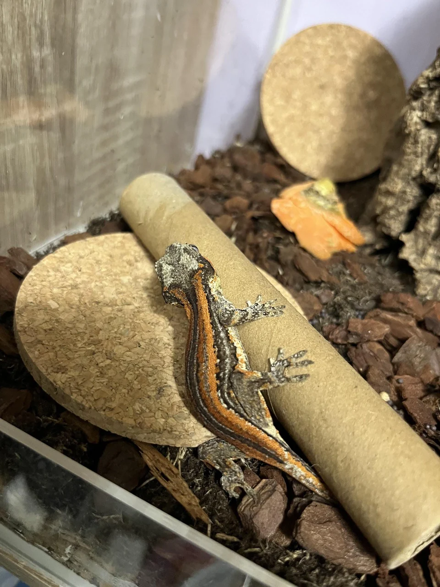
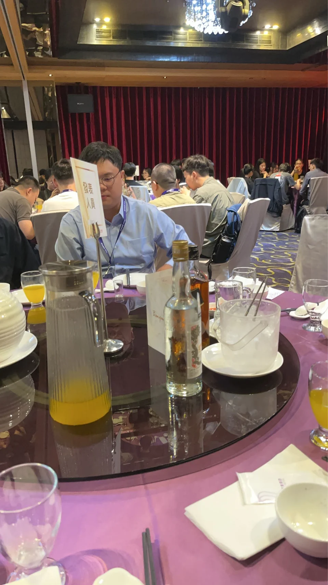
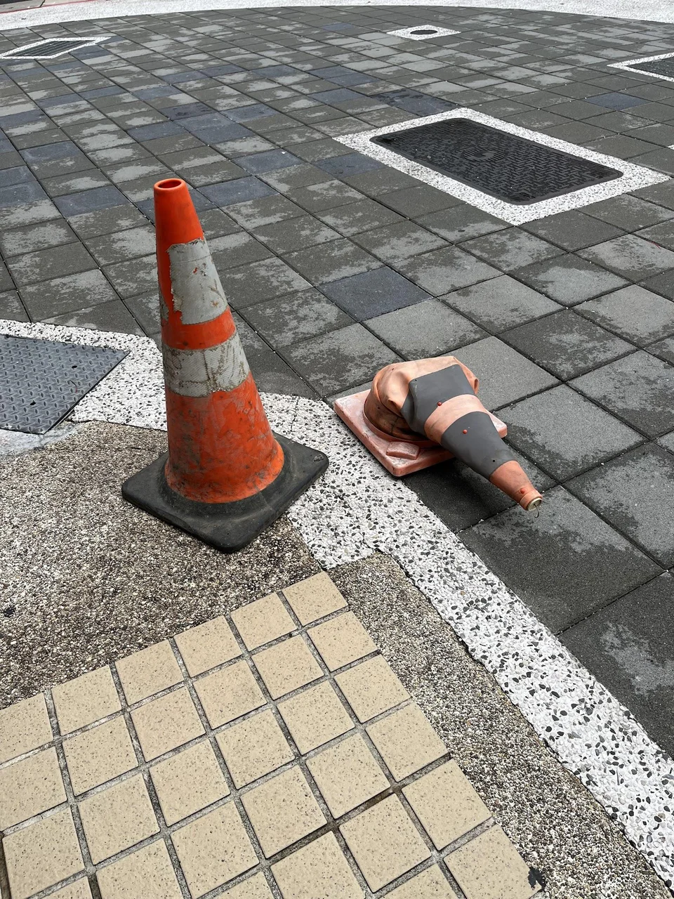
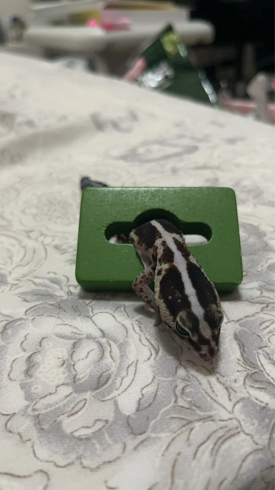
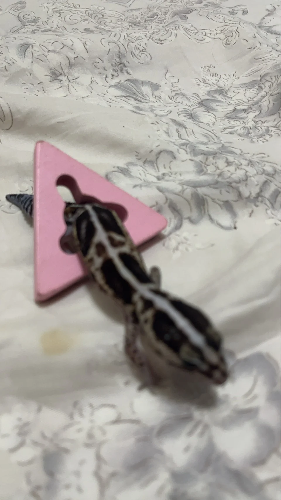
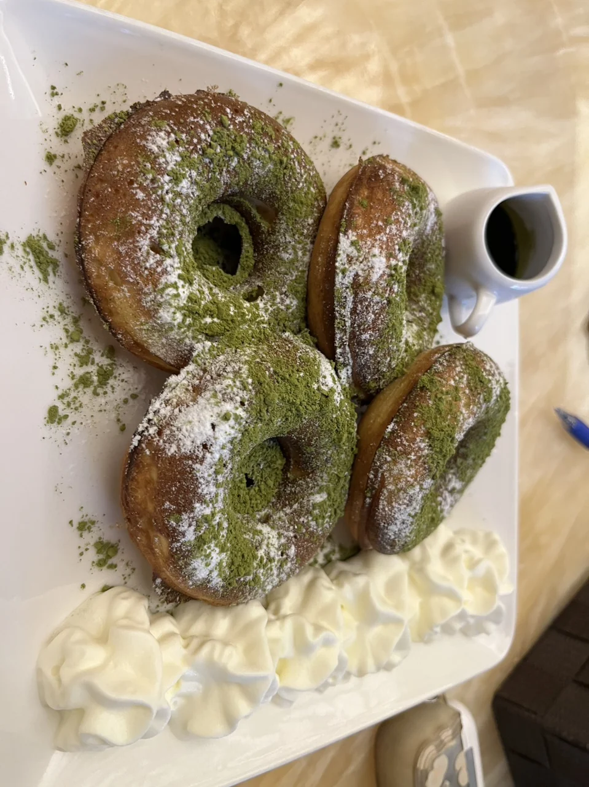
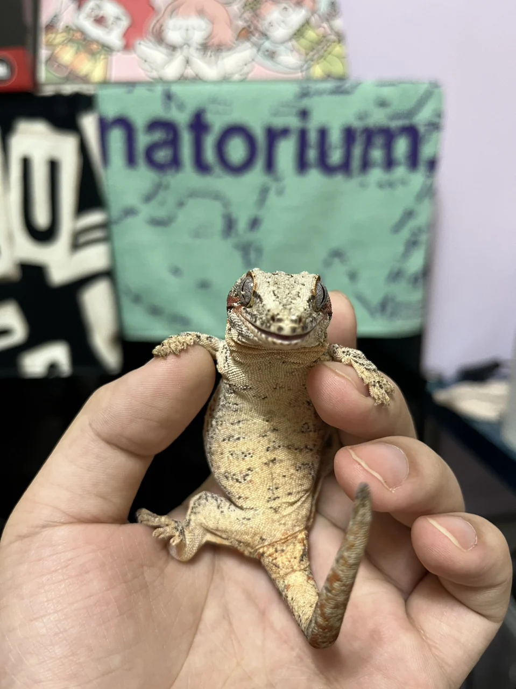

2021 — 2026
聖誕節卡片
點選卡片開啟左右滑動，點選年份開啟
2021 — 2026
點選卡片開啟左右滑動，點選年份開啟
表單標示 2021，原文提及 2020；年份待核對。
從高一開始我每年都有在寫聖誕卡片，雖然忙起來就一直拖....所以我今年提早問了！
可是好多捧油都分離各地了嗚嗚嗚嗚（所以需要地址）
希望大家可以在2020年有個快樂的結尾(´･ω･`)
就是......每年我都會寫啊
然後我都丟表單哈哈
個人傳統,純粹就連絡一下感情,在一年即將結束前跟去年的你說掰掰,跟明年的你說你好,跟曾經玩在一起的人說謝謝這樣
因為製作卡片需要時間,所以都會提早丟R
我是6or六號,或是IC或是快遞,或是甚麼奇怪的綽號還是誰都好
在這個年尾的時節跟大家打聲招呼這樣
2022年ㄌ,這一年發生很多事ㄟ
我沒有打算要說甚麼希望大家都好的幹話,但希望我的卡片可以傳達一份問候還有地球上總是有人在某時某刻與你同在的這樣
有些人正在與學分奮鬥,有些人在跟專題拚搏,有些人正在往未來邁進;或許我們相處並不長久,但很高興可以在短暫的時光中認識你!
TO要畢業ㄌ的人Or社畜預備軍Or考研究所的朋友
好感傷喔.....嗚嗚嗚
某種程度上我還是很想今年畢業(各種原因上)
好多人越來越忙,越來越少見到了
雖然不知道未來會不會很難過,但祝你們可以在前進未來的路途上吃得飽飽的!然後都可以住得爽爽的不用屈就於資本主義的淫威下!
TO 不管你之前知不知道現在要你都知道了
我不知道其他人是在什麼情況下認識我的，可能有人覺得我是個外向活潑的社交人；也可能覺得很沈默又冷靜；也有可能看到我覺得是哪來的低能兒或是憤青還是什麼的奇怪形象。
有些時候對我有一些行為上的期待會很容易翻船，舉例：我真的不是一個外向的人。
我很常不知道怎麼融入
我也很常跟所有人保持安全距離
我很奇怪，這很正常。
我很多病，這是日常。

嗨早，這是一份酷酷的聖誕節卡片表單。
宿舍太早慶祝了，所以我也提早了這個卡片表單的時程。
可以的話，請一定要填寫本名(如果你是我在其他什麼不公開本名的地方認識的我就不用寫，保護個資很重要的)；如果想要寫綽號或是覺得我辨識的出來就寫在後面吧
不寫的話，我會不知道是要寄給誰或寫甚麼就寫罐頭內容。
預計寄卡片是聖誕節前後會讓所有人收到，距離現在還有很久。
我每年都會寫，理論上這裡我會放我一些想說的話，但今年我忙到沒有時間好好寫。撰寫本文現在的我禮拜三要考試，可能有空我會再補一下。
補完ㄌ，很長，很建議跳過。（畢竟是一年一次）
致：所有朋友
我不太會表達我自己很多方面的感情，但我很愛我的朋友們。
我可能表現得不好、很忙很少一起做些甚麼，但我是以我當下所能及的程度去好好對待他人。
我頭上的烏雲在近一年半來大的很可怕，願意包容我的人我都一百二十萬分感恩。
個別卡片我會個別寫，不會是罐頭內容。
今年很忙，基本上會用我畫的圖去輸出卡片，手作卡片就看明年有沒有辦法；手寫是不可能停掉的。
更新：我用相紙印出我畫好的圖片當聖誕卡！
今年到去年我改變很多，討厭我喜歡我覺得我好不好都接受公評。最後一年(應該啦)我想練習當個坦率的人。
要罵我的或要跟我說甚麼或是當樹洞都可以寫在備註唷，不會外流，不用擔心。
我每年都會偷偷期待有討厭我的人找到表單過來罵我，知道為什麼被討厭這樣。
以下是今年我想說的，順便Update一下我的近況。（然後大家或多或少也都有自己的挑戰什麼的，你也辛苦了。努力過的都值得被慶祝！）：
今年我度過了很糟糕的前半年，糟糕的程度大概是我每個月想自殺或休學次數平均是兩三次。今年我知道了我身上的神經痛可能一輩子都不會好(可能未來冬天都要去南半球避難了)，舉凡天氣太冷又回暖的日子我就會在感受到熱的同時感受到全身被火燒灼的疼痛；然後先前我的生活圈與家庭也遇到了一些我無法處理的事情，總歸而言，最開始的那段日子真的是蠻頭痛的。
後來夏日來到，時至十二月七號今日都還是可以穿著短袖出門的日子，我的神經痛都未曾像年初那樣全身性發作過，應該可以稱得上是一種幸福。
今年有很多意想不到的事情，再次與大一室友同住、遇見跟自己經歷大相逕庭卻聊得來的朋友、去EIA玩了一遭、當聽團仔、玩推特當超級活網人、成為莫名其妙地的委員跟議員、縫了一個新書包、學了很多語言、家裡小孩成長飛速......一切一切都是我如果選擇消失的話不會遇到的事。今年我也試著再勇敢很多次了，雖然不能說我有進步太多，但至少就年初的創傷而變得害怕社交的人類而言，我想我利用了相對短的時間去試著走出去了。
大家放輕鬆一點。如果像現在的社群網路一樣那麼多文字獄又要那麼假掰我會窒息。
我想要走出去，盡我所能地走遠一點看看不一樣的世界。
我想要談論的事物太多，大概可以出一本書碎碎念了。長話短說，從國高中到大學前三年結束，我厭倦許多現在生活中的那些被忽視或被說服強迫接受的事物.....算ㄌ，這部分我現在想不到。改天想到或許明年再說，又或是下次有機會的話再跟不知道誰聊天吧。
之後我會試著當個勇敢的人吧，在我能力所及的範圍啦。
喔對。我期望所有人都討厭我的世界，因為那樣的我不需要被期待。至少年初我是這麼想的。
再來是或許或說，永遠不會再是朋友的人、說我壞話的人、討厭我的人，我蠻希望他們（或你？）可以看到我寫的字。我沒有打算要讓別人改觀變得不討厭我，我也不覺得別人討厭我的理由都不成立。只是想跟你們打招呼而已，如果你們覺得看我過得不太好會開心的話，我的生活蠻常有插曲的，不用太擔心我的生活過得太好沒辦法笑。
我誠心誠意地不覺得自己是個足夠被作為好人看待的人，不過既然每個人都有擅長與不善長的事物，我想這就很正常吧。然後我很想你們，我念舊的頻率比我預期還要高。但我沒有打算去假裝任何是不曾發生過就是了，活著哪來那麼便宜的事情。
還有你，我不知道你哪來的感覺還會故作鎮定地跟我打招呼，幹嘛不要表現得跟你訊息中的惡意一樣。我並不會因此而覺得你是個惡劣或是極度糟糕的人，但那份假裝會讓我受傷。還期望你可以理解。
就是......每年我都會寫啊
然後我都丟表單哈哈
個人傳統,純粹就連絡一下感情,在一年即將結束前跟去年的你說掰掰,跟明年的你說你好,跟曾經玩在一起的人說謝謝這樣
沒錯 今年是完全照抄去年的模板 因為我太忙沒時間做了
今年出太多事了 ㄏ
封面是我的雙辮 超級酷 很常被叫小姐 超好笑
今年會用相紙印卡片 然後放信封寄出 下周五前會全部寄出去 大家聖誕快樂
可能不會寫太多 因為好累 但 我愛大家
每年都有的卡片這樣。跟舊朋友打招呼、跟新朋友打招呼、也跟大家分享我的生活。
一開始想放一些有我跟我朋友的照片，但想一想先不要放好了。
但我還是愛你們!
會有俄文姓氏是因為今年我讀完了一本俄國文學《凡尼亞舅舅》，這本書是我接著《美麗新世界》讀完的，因此內容裡的情感鳩葛被前一本書裡面的糟糕世界觀比一比之後相較就是幾個人的無聊捉弄戲碼了。但是依然推推這兩本，描寫時代背景都很細膩，體驗了舊世界的人心間的泥濘和新世界裡自由以上，個體不滿的瘋狂。
畢竟還要寫論文呢
依稀記得大二大三那陣子堆了很多酒也喝了很多酒，現在則是對酒精沒什麼感覺。生活中有很多不同的體驗我就很滿意了。或許酒精確實一度給了很多人偶爾放縱的機會，但我想我喜歡注重某些細節，即便喝完酒我還是很在意那些細節，放縱反而是給了後續更多收拾的麻煩還有變胖(我想身為理工類常常在電腦前面工作的人而言肥胖是常見健康問題)。
我曾經愛威士忌 但我現在只覺得好累。
每年都有這個欄位，就，我也不知道要怎麼說阿。
我很少跟別人一直社交或什麼的，還是想聽我的朋友們說說話(就是你)這樣吧。






這是我每一年都會做的聖誕卡片表單。今年的主題是瑞克與莫蒂
今年有些人是從機器人信件那邊看到聖誕卡片表單通知，也有一些人是從連結點進來的。
總之是每年我都會寄，接著是講一些話還有拿一些寄信需要的資訊這樣。
由於目前是九月，因為種種原因我想要先製作這個表單把我之前想到的東西記下來。
以下是今天的近況交代：
一樣我還在吃躁鬱症的藥物。
一樣我神經痛沒有好。
我養了守宮，很呆很胖很有趣很可愛。
我不讀碩士了，身心狀況不適合；或許一直以來都不適合，只是一直撐到現在。
我沒有要放棄讀書，我還是蠻愛書的。休息了幾個禮拜後，我又開始技術書籍跟課外書了。
我還是很喜歡外文，但進度慢慢的。
我愛我的朋友，即使我離大家都遠遠的。
我想要約朋友出去但是我很害怕，但我也不確定我害怕什麼。
今年我去泛舟，很酷很有趣。第一趟的時候船底破了越做越沉非常之好玩最後跟騎馬一樣上上下下而且視野水平線越來越接近水面。（但後面換了一艘正常的船）
今年我又開始更新hackmd了，要整理的東西還有想寫的東西還有很多：這與AI有沒有出世沒什麼關係，那也會是題材之一。
守宮的缸，也就是他們的家，被我放了很多東西裝飾的很酷，有空的話我會把他們放到ig 之類的。
有時候我很雞婆，我很在意我的朋友會不會因為某些事情受傷；我想我會繼續這樣地擔心，但要做些什麼我想我也很迷惘。我想經年累月我又變了，我想稱呼自己成熟很怪也不符合事實，只是腦袋轉啊轉累積了不少東西。真希望這些想法可以賣課賺錢讓我不要餓死（開玩笑的）
我是個躁動且混亂的人，這不是褒義或是貶義——只是我腦子轉啊轉，又一直受到各種影響下，我猜我在不同時期表現出來的個性與表象差異很大（但偶爾憤世忌俗與講話惡毒的部分並沒有差太多）——以上算是重新自我介紹。即使有些時候我常常很孤僻、有些時候固定一段時間我就會消失、失聯、有時我會退縮刪掉社交帳號；
我確實是喜歡我的朋友的，也想要跟朋友待在一起。
以上是嘎拉嘎拉的murmur。我會鼓起勇氣在這一年或下一年多做一點事的。
這次更新是十一月：
最近做了很多事情，架設網站、接案﹑做專案、讀書有的沒的，似乎跟之前的生活沒有差太多。
在求職的過程沒有想像中順利，同時看到很多公司開超低在請工程師卻要對方什麼都會，也在面試的過程中遇到一些給很低薪水又愛擺架子的詭異主管。(一來是面試是雙向的，二 來是對方也不是老闆，有必要不是資方又要擺一張臉嗎?如果他很不滿或是在環境中被扭曲需要透過這樣對外人或對新人這個態度那需要諮商的是他不是我，如果薪水不到平均水準甚至是基本薪資層級，不知道該擺臉色的應該是他還是我；再來為什麼要去很低薪水的地方面試這件事。面試本身也是一種社會探訪的機會且意外地有趣，有沒有上要不要工作是一回事(很明顯不會去只是到處看看))。
休息了一段時間突然什麼都好一些，逃跑治百病吧或許。接案這件事大大地改變了我的想法，用接案的角度去工作、對接跟當員工或求職的感覺差太多了：前者是對等的，後者不知道為什麼很卑微又很讓人不舒服。
看到很多人都在做自己的事，出國、工作、讀書，時間過得好快。
喔對，我不是長髮男了。雖然很高機率會繼續留長。而且還打了三個耳洞。
還有我做了一個酷東西，可以在電腦上貼磁磚在桌面當便條紙(也可以設鬧鐘、放圖片，也支援持續置頂在桌面)
github：https://github.com/NicoaTheSix/DeskTile
下載跟使用說明在：https://nicoathesix.github.io/MyPortfolio/desktiles/
可以玩玩看






